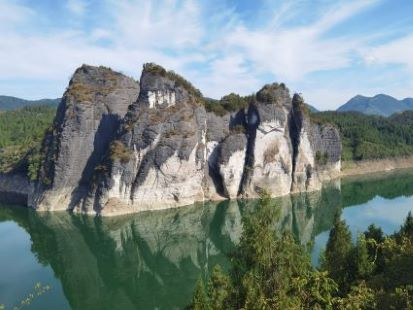
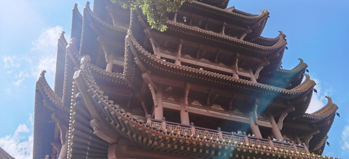
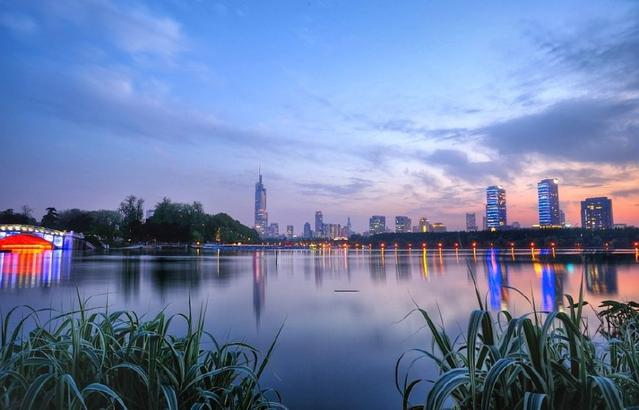

二十岁，到现在，也去过了很多地方，在很多地方也留下了自己的足迹。
照片可以记录自己旅行过的地方，很久以后才明白，原来自己拍的不是那些地方壮丽或美好的风景，记录的不是美好的自然风光或人文景观，而是，属于自己的，在这最美好的青葱岁月的，一段段回忆。
多年之后回头看，照片里的全是，关于你的，我的，美好的记忆。
被视为仡佬族起源的“九天母石”犹如九柱擎天，耸立在洪渡河的岸边。有道是看瀑布峡谷，赞恢弘峻险；看红叶山花，品诗情画意；看雾缭云海，赏天上人间；看莲山佛香，叹奇观万象。这里有堪比张家界的山、媲美九寨沟的水，有广阔无边的草场、连绵不绝的奇石，有难得一见的树、十分有趣的猴。
黄鹤楼，位于湖北省武汉市武昌区，地处蛇山之巅，濒临万里长江，为武汉市地标建筑；始建于三国吴黄武二年（223年），历代屡加重修，现存建筑以清代“同治楼”为原型设计，重建于1985年；因唐代诗人崔颢登楼所题《黄鹤楼》一诗而名扬四海。自古有“天下绝景”之美誉，与晴川阁、古琴台并称为“武汉三大名胜”，与湖南岳阳岳阳楼、江西南昌滕王阁并称为“江南三大名楼”，是“武汉十大景”之首、“中国古代四大名楼”之一、“中国十大历史文化名楼”之一，世称"天下江山第一楼"。
玄武湖位于南京玄武区，距今已有2000多年历史，是中国最大的皇家园林，也是目前仅存的江南皇家园林，有着“金陵明珠”的美誉。玄武湖是金陵四十八景之一，湖中有岛，岛岛相连，岛上有景，多为人文景观，历史上的玄武湖因其内建立黄册库而成皇家禁地。傍晚的玄武湖非常美，湖水波光粼粼，倒映着南京城。
